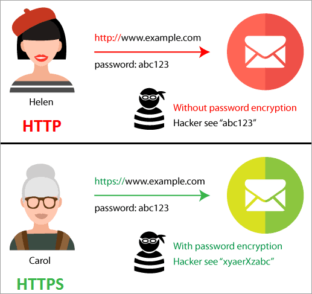
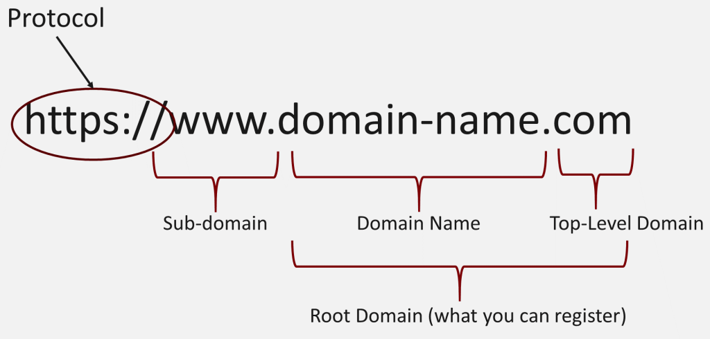
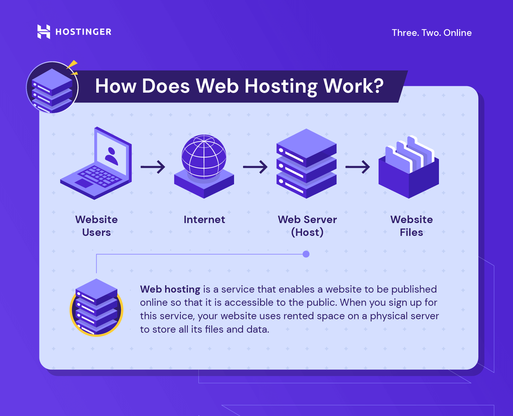
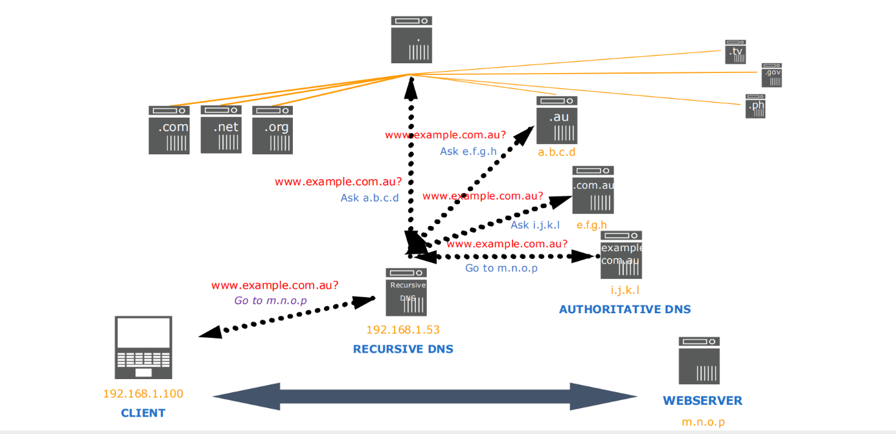
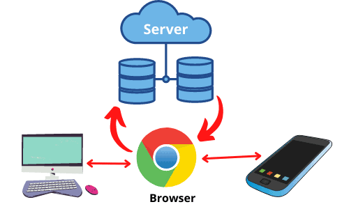

Cara Kerja Internet Secara Umum
Internet adalah jaringan global yang menghubungkan miliaran perangkat di seluruh dunia. Internet bekerja dengan mengirimkan data dalam bentuk paket melalui serangkaian jaringan komputer. Setiap perangkat yang terhubung memiliki alamat IP unik yang digunakan untuk mengidentifikasi perangkat tersebut.
Cara Kerja:
- Model Client-Server: Ketika Anda mengakses internet, perangkat klien mengirim permintaan ke komputer lain (server) yang berada di lokasi jauh. Server kemudian memproses permintaan tersebut dan mengirimkan data yang diminta, seperti halaman web atau file.
- Transmisi Data: Informasi dikirimkan dalam bentuk paket-paket kecil yang membawa data dan informasi rute. Paket-paket ini dikirim melalui jaringan dan disusun kembali di perangkat penerima untuk menampilkan konten yang sesuai.
- Protokol: Komunikasi antar perangkat diatur oleh protokol, yaitu aturan standar untuk pertukaran data. Protokol yang paling penting untuk web adalah TCP/IP (Transmission Control Protocol/Internet Protocol).
Referensi: Wikipedia - Internet
HTTP dan HTTPS
HTTP (HyperText Transfer Protocol) adalah protokol yang digunakan untuk mengirimkan data antara browser dan server. Data yang dikirimkan melalui HTTP tidak dienkripsi, sehingga dapat dilihat oleh pihak ketiga.
HTTPS (HyperText Transfer Protocol Secure) adalah versi aman dari HTTP yang menggunakan enkripsi SSL/TLS untuk melindungi data saat ditransfer antara browser dan server.
Referensi: MDN Web Docs - HTTP
Nama Domain
Nama domain adalah alamat unik yang digunakan untuk mengakses situs web di internet. Domain memudahkan pengguna dalam mengakses website tanpa harus mengingat alamat IP yang sulit dihafal.
Cara Kerja:
- 1. Saat mengetik nama domain di browser, server DNS (Domain Name System) menerjemahkan nama domain tersebut menjadi alamat IP yang sesuai.
- 2. Browser kemudian menggunakan alamat IP tersebut untuk menemukan dan menghubungkan ke server web yang meng-hosting situs web.
Nama domain terdiri dari dua bagian utama:
- Top-Level Domain (TLD): Misalnya, ".com", ".org", ".net".
- Second-Level Domain (SLD): Bagian unik dari domain, misalnya "jkt48" dalam "jkt48.com."
Referensi: Wikipedia - Nama Domain
Hosting
Hosting adalah layanan yang menyediakan tempat untuk menyimpan semua file dan data situs web, sehingga dapat diakses melalui internet. Hosting biasanya disediakan oleh perusahaan penyedia hosting web.
Cara Kerja:
- Server: Penyedia hosting memelihara komputer-komputer yang sangat kuat (server) yang menyimpan data situs web dan menyediakannya kepada pengguna yang mengakses situs.
- Jenis Hosting: Ada beberapa jenis hosting, seperti shared hosting (hosting bersama), VPS (Virtual Private Server), dan dedicated hosting, tergantung pada skala dan kebutuhan situs web.
Referensi: Hostinger - Apa itu Web Hosting
DNS
DNS (Domain Name System) adalah sistem yang mengubah nama domain menjadi alamat IP yang bisa dimengerti oleh komputer. DNS bekerja seperti buku telepon yang menerjemahkan nama domain menjadi alamat IP yang sesuai.
Referensi: Wikipedia - DNS
Browser
Browser adalah aplikasi perangkat lunak yang digunakan untuk mengakses dan menampilkan halaman web di internet. Browser bekerja dengan mengirimkan permintaan HTTP atau HTTPS ke server dan menampilkan konten yang dikirimkan oleh server.
Cara Kerja:
- Permintaan Pengguna: Ketika pengguna memasukkan URL atau mengklik tautan, browser mengirimkan permintaan HTTP/HTTPS ke server.
- Pencarian DNS: Browser menghubungi server DNS untuk menerjemahkan nama domain menjadi alamat IP.
- Mengambil Data: Browser menghubungkan ke server dan mengambil file HTML, CSS, dan JavaScript yang diperlukan.
- Rendering: Mesin rendering browser memproses dan menampilkan konten di layar, menyusun gambar, teks, dan tata letak sesuai dengan kode yang didefinisikan.
- Interaksi: Pengguna dapat berinteraksi dengan elemen di halaman, dan browser menangani perubahan dinamis melalui JavaScript.
Referensi: MDN Web Docs - Cara Kerja Browser